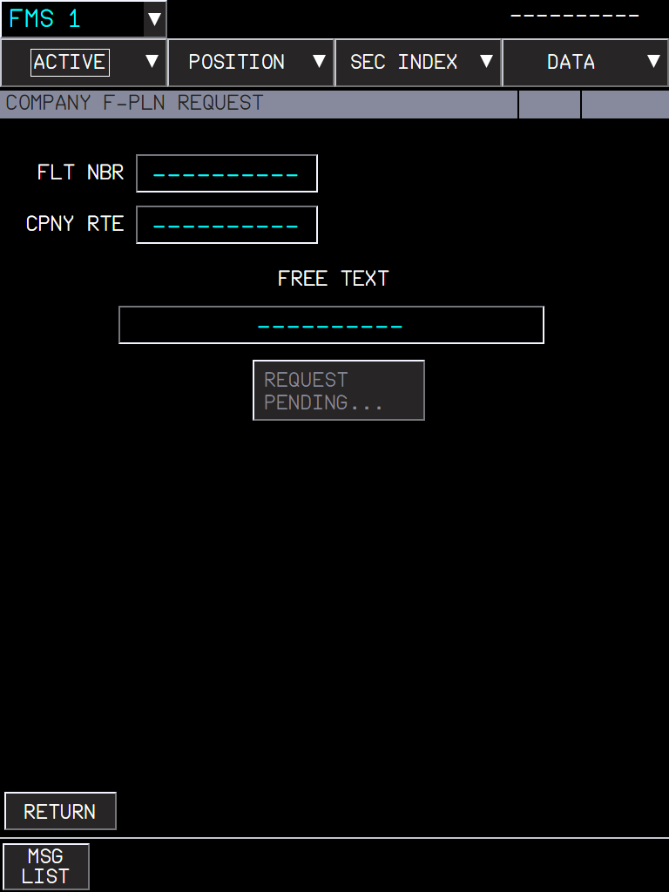
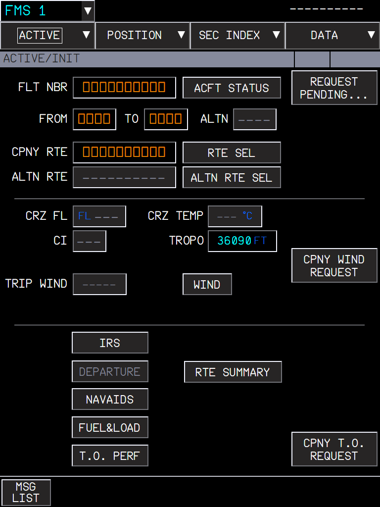
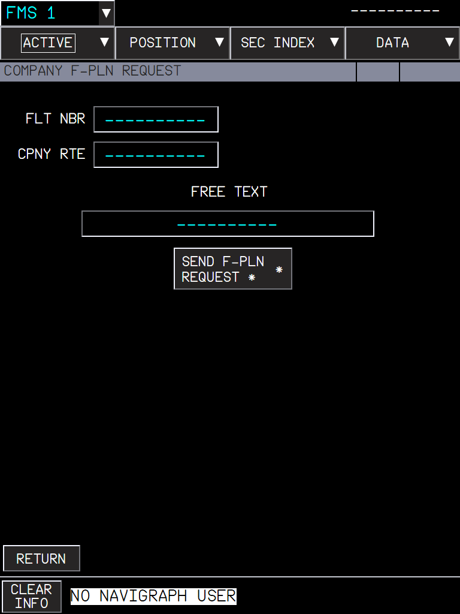

Company requests (flight plan, winds, takeoff data) answer after a realistic datalink delay, with REQUEST PENDING... and NO COMPANY REPLY as in the FCOM
AircraftA380X (the A32NX MCDU uplink stays instant)Where to find itflyPad > Settings > Realism > Company Datalink Reply Time; MFD INIT, WIND and PERF company request buttonsPR branchpr/21-a380x-company-datalink-delay (stacked on PR 12)StatusBuilt and checked in the harness; used in the sim during development.PicturesflyPad and captain MFD in the local browser harness, running the build installed in the sim. The harness has no SimBrief access (blocked), so requests stay pending.
1. What it is for
2. The setting
3. Requesting the flight plan
4. Winds and takeoff data
5. What to expect
6. Limitations and why
1. What it is for
On the A380 the flight plan, the winds and the takeoff data come from the airline by datalink (FCOM DSC-22-FMS-10-40-90). A request takes time: the button shows REQUEST PENDING... until the answer, and NO COMPANY REPLY appears when nothing comes within 4 minutes. FBW answered instantly; now the answer arrives after a reply time you choose.
2. The setting
Figure 1. flyPad > Settings > Realism: Company Datalink Reply Time, Real by default.
Setting
Answer to a request
Message sent without a request (e.g. SEND TO FMS)
Instant
immediately
immediately
Fast
5 to 15 s
1 to 3 s
Real (default)
60 to 120 s
5 to 15 s
Airbus gives no figure: these are typical airline values, below the 4 minute limit of the FCOM.
3. Requesting the flight plan
INIT > CPNY F-PLN REQUEST opens COMPANY F-PLN REQUEST (flight number, company route, free text).
Press SEND F-PLN REQUEST. The button becomes REQUEST PENDING..., here and on INIT; one request at a time.
After the reply time the SimBrief flight plan is delivered to the FMS, as before.
If SimBrief does not answer (no network, no flight plan), NO COMPANY REPLY appears after 4 minutes.

Figure 2. Request sent: REQUEST PENDING... (greyed until the answer).

Figure 3. INIT shows the pending request too.

Figure 4. Without a Navigraph account or a SimBrief ID in the flyPad settings: NO NAVIGRAPH USER, no request.
4. Winds and takeoff data
CPNY WIND REQUEST (INIT or WIND page): the winds are delivered after the reply time.
Takeoff data (PERF T.O > CPNY T.O REQUEST, see the PR 11 manual): the answer of the flyPad Send to FMS reaches the FMS not before the reply time of the request; without a request, after the transit time only.
5. What to expect
Situation
What you should see
Real, request sent
REQUEST PENDING... for one to two minutes, then the data.
Instant
The data at once, as before this change.
A second request while one is pending
Not possible: the button stays REQUEST PENDING....
No answer
NO COMPANY REPLY after 4 minutes.
No Navigraph user / SimBrief ID
NO NAVIGRAPH USER; nothing is sent.
6. Limitations and why
Limitation
Why
What to do
The reply times are typical values.
Airbus publishes no figure for the airline answer.
Choose Fast or Instant if you prefer.
The A32NX MCDU uplink stays instant.
This change is for the A380 FMS; the A320 uplink has its own messages.